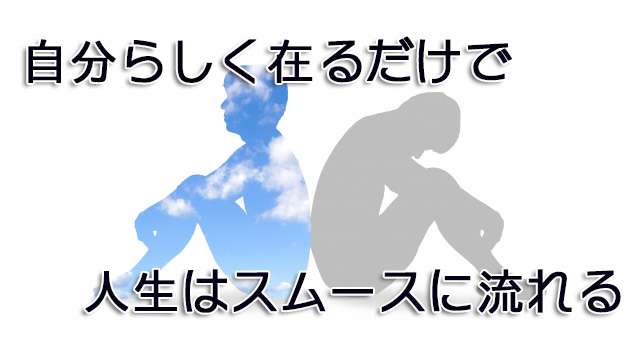

自分らしく在ること。何より本当の自分でいることを第一優先にする。普段からこの心構えでいることで物事は結果として好ましいものになっていく。
だが多くの人は「自分らしく在る」より、他人の眼に自分がどう写るか「変に思われないか」「悪く思われたら不利だ」という、周囲の思惑のほうを優先してしまう。あるいは「社会的に正しい」とされていることを基準にしてしまう。
その結果他人から見た自分像をイメージし、そのイメージに迎合し続けることで本当の自分を見失う、他人に受け入れられることを優先するあまり、自己が空っぽになってしまうわけだ。
こうなると自分では正しく生きているつもりでも、いつも理不尽や満たされない思いを抱え込み最終的には怒りや無力感に囚われてしまう。普段ニコニコ大人しい人が突如怒り狂ったり感情を爆発させて周囲を驚かすことがあるが、こういう事情による。
だから自分らしく在ること。本来の自分で生きることが大切となる。
しかし「自分らしく」などというと「それってワガママになれっていうこと？」「相手に自分を主張すること？」「利己的になれっていうのか」とトンチンカンなことを聞いてくる人がいるが、もちろんそうではない。むしろ正反対である。自分らしく在るとはそれら外へ向けての表面的態度ではなく、まずは自分の内側へと深く降りて行くような心の在り方である。
実は私たちは毎日無意識に自分の在り方を選択している。朝食に何を食べるかや宿題をサボリ気味の子どもに注意すべきか否か、仕事の人間関係の調整や重大な交渉にどう臨むかに至るまで、無数の選択を行っている。
そのほとんどは「こういうときはこうすべきだ」というこれまで蓄積されてきた習慣的思考の命ずるまま、いわば自動ロボットのように無意識的反応の選択となっている。選んでいるというより選ばされていると言える。
この無意識反応を止めて「本当の自分はどう在りたいのか」と内面に問うこと。勉強しない我が子に怒りがわくとき、理不尽な上司に反抗心が起こるとき「今日こそ言わせてもらうぞ！」という思いに囚われるとき、これは果たして「在りたい自分なのか」と問うてみるべきだ。そのとき返ってくる答えが正解となる。
「自分らしく在る」は最強のツール
「在りたい自分」に照らした結果、もし怒りをぶつけるのが正しい答えだと思うならそうすればよい。無意識の反応で行動するよりマシだ。なぜなら意識的に、つまり主体的にその行動を選んだ自覚がある以上、後悔することはないからだ。
ただ、日頃から自分らしく在ることを心がけていれば怒りを選択することはなくなってくるだろう。誰でも本当の自分が何を望んでいるかを深く考察すれば、闘争や破壊ではなく平和、共存、そして穏やかな人間関係であることが分かるからだ。
もちろん、これは妥協しろという話ではない。自分の言いたいことを抑えろという話でもない。自分の内面に深く根を降ろし、在りたい自分に正直になり本当の自分の心の声を聴くことで、内面と行動が一致するときたとえ目の前にいる人に言い難いことを言ったとしても、不思議なことに相手の反感を買うことはない。
確かに多少の勇気は要る。苦手な人物やタフな交渉相手、入り組んだ人間関係の調整など私たちは困難を前にすると相手の思惑や出方を計算し、対処法を練ってしまう。身構えてしまうのだ。だから失敗する。
こういうとき私たちがやるべきは、相手に対処することではなく自己に向き合うことである。在りたい自分を思い描きその在りたい自分が語り、思い行動する。正直かつ誠実に。結果は考えない。計算しない。ただいまこの瞬間最大限自分らしく在ることだけに意識を向け続ける。相手の反応も気にしない。
すると不思議なことが起こる。場の空気が変わり相手の警戒心が解けるのが分かる。
結果として事態は好転する。私はこのやり方でいつも難局を乗り切ってきたし今もそうしている。
もしあなたがそれでも心配だと言うなら、どうか一生懸命対策を練り計算し考え尽くして欲しい。「こうきたらこうしよう」「こう言われたらこう返そう」と事前に対応策を考え抜くことだ。
あらゆる可能性を考慮しプランを検討すればよい。それが一般に正しいとされる方法だからだ。
しかしそのやり方がいつもうまくいくとは限らない、あるいはそれが通用しない局面もあると気づいたなら私の言葉を思い出して欲しい。そして「ここでの在りたい自分とはどんな自分なのか」と自問し自分らしく語り、考え行動すると決意し実行する。
そうすれば結果的に「何だ、自分らしく振る舞えばよかっただけか」と気づくだろう。そこには独特の爽快感がただよう。あなたの「自分らしさ」が周囲に伝わり彼らの重荷を解いたのだ。あなたの選択が自由をもたらした。
自分らしく在ること。本当の自分を表現すること。
これらは人間関係を好転させ物事を望ましいものに変える、シンプルだが最強のツールである。
そのことを忘れず日々これらを行動の基準にして欲しい。そうすれば人生はスムースに展開するだろう。